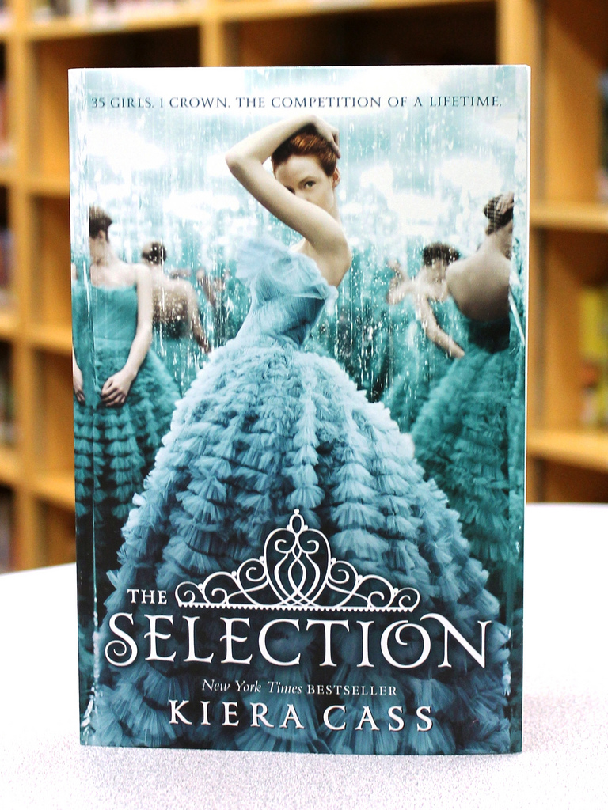
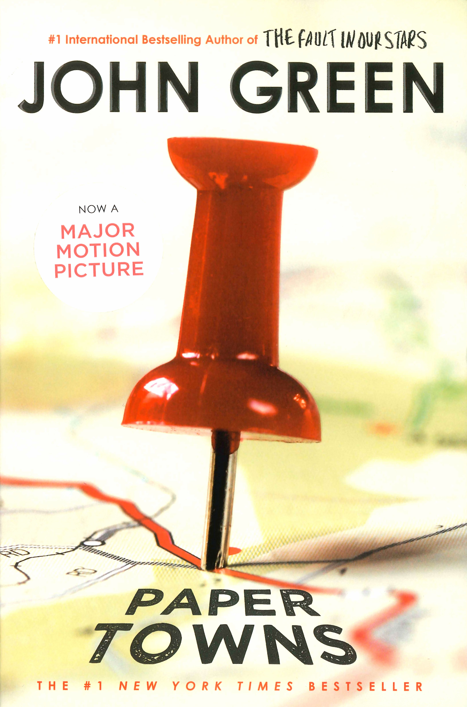
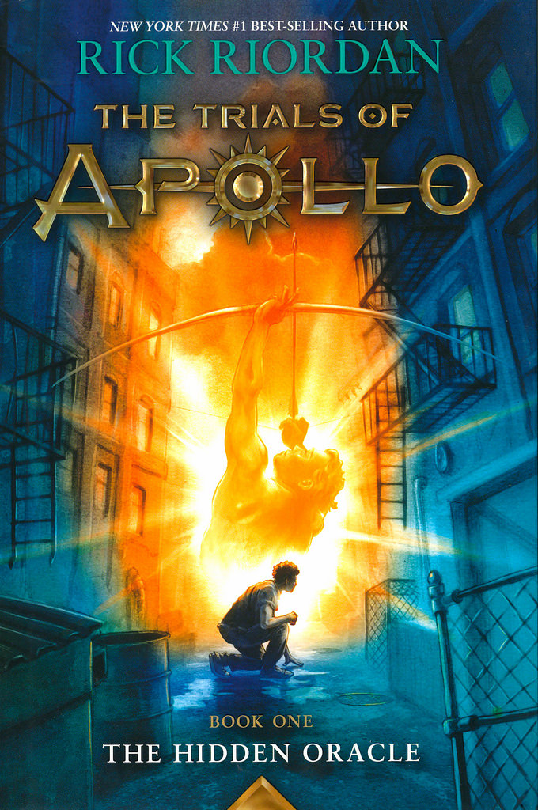

I could not put this book down and pulled several all-nighters when reading this series. I was very reluctant to read the Selection,
mostly because I had assumed by the cover that it wasn't a book I would like, but after several of my friends recommended it to me I read the entire
series in days. Once I got past the fact that the main character's name was America, it was actually a good book. I would definitley recommend the
series. However, there is a sequel series about her daughter that I could not even finish. Maybe I didn't give it enough of a chance, but
I found the new characters annoying and did not want to finish the book.

Paper Towns
By: John Green
I did not hate this book, but it was not one of my favorites. Paper Towns was a little anti-clamatic, and the ending was disappointing. I didn't really
care about what was happening until half way through the book, and by then I was bored and just reading it to finish. Paper Towns wasn't bad, but compared to some
of John Green's other books it was not very good.

The Trials of Apollo
By: Rick Riordian
Percy Jackson is an amazing series that everyone my age has read at some point, and I was really excited for this book to come out. I had assumed
that all of my favorite characters would be in it, and it would be another great series by Rick Riordian. Once I started reading, I realized that everything
would be about the new characters. I would have been okay with this, but I found the main character extremely annoying. I read about half of the book, but once
the characters that I liked were no longer in the main plot, I quit. Maybe the series does get better, but I couldn't get past how annoying Apollo was.
